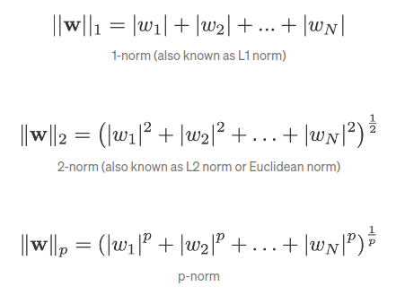
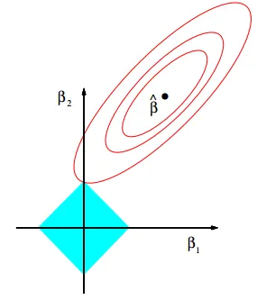
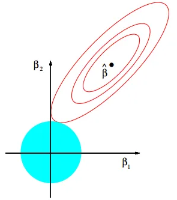
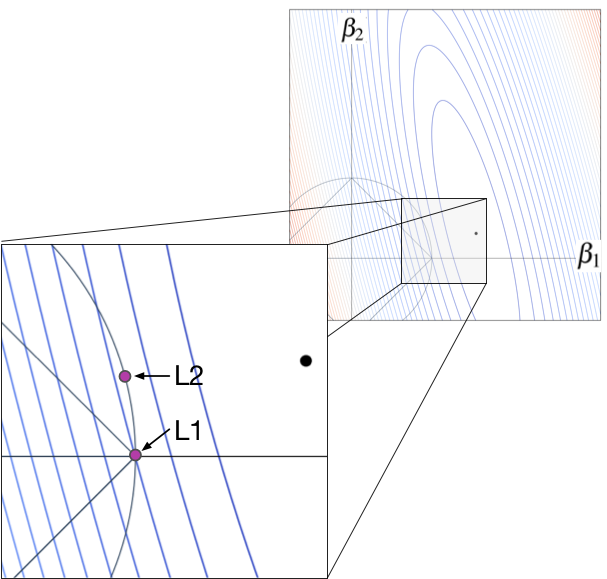

Regularisation
Regularisation is a method of reducing overfitting / variance by adding a penalty term to the loss function. The penalty term is the norm of the parameter, where "norm" refers to vector norm, which encompasses different ways to measure the magnitude of a vector.

As the loss function is used in an argmin to find the optimal model parameters, increasing the regularisation hyperparameter forces the parameters it is multiplied with to shrink. Overall, shrinking the parameters reduces the complexity of the model.
L1 / Lasso
Uses the L1 norm as the regularisation / penalty term in the loss function.
As the L1 norm is the sum of absolute values of a vector, it is mathematically similar to a square funciton:
$abs(x) + abs(y) = diag$
Thus, it imposes a linear constraint:

L2 / Ridge
Uses the L2 norm as the regularisation / penalty term in the loss function.
As the L2 norm is the square root of the sum of squared values of a vector, it is mathematically similar to a circle function:
$x^2 + y^2 = r^2$
Thus, it imposes a radial constraint:

Unlike the L1 regularisation, the radial contours result in an optimal loss function with parameter values that do not lie on the axes. L2 is hence unable to shrink parameters to 0 unlike L1 regularisation.
